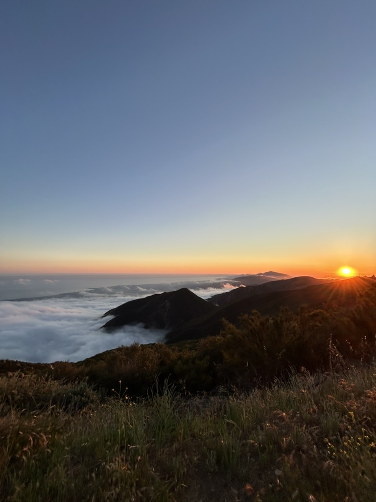
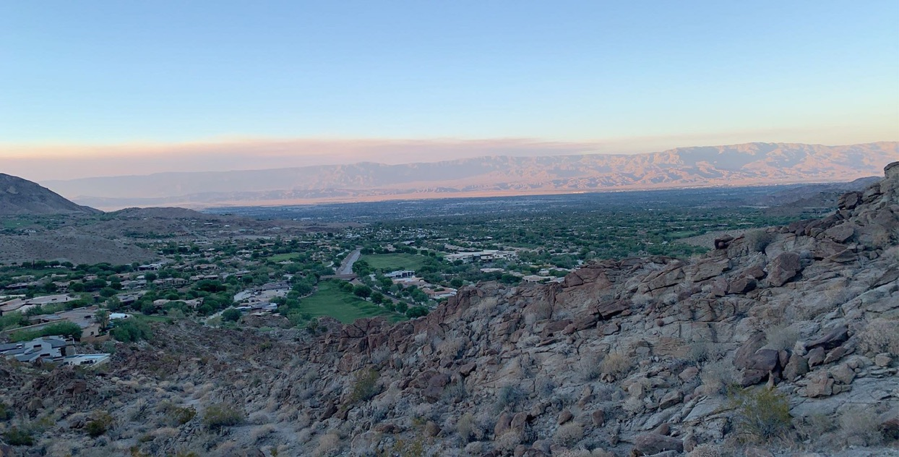
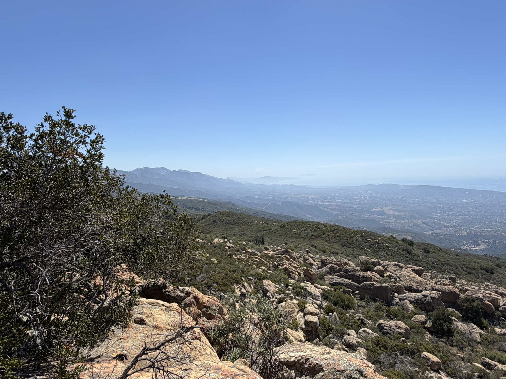
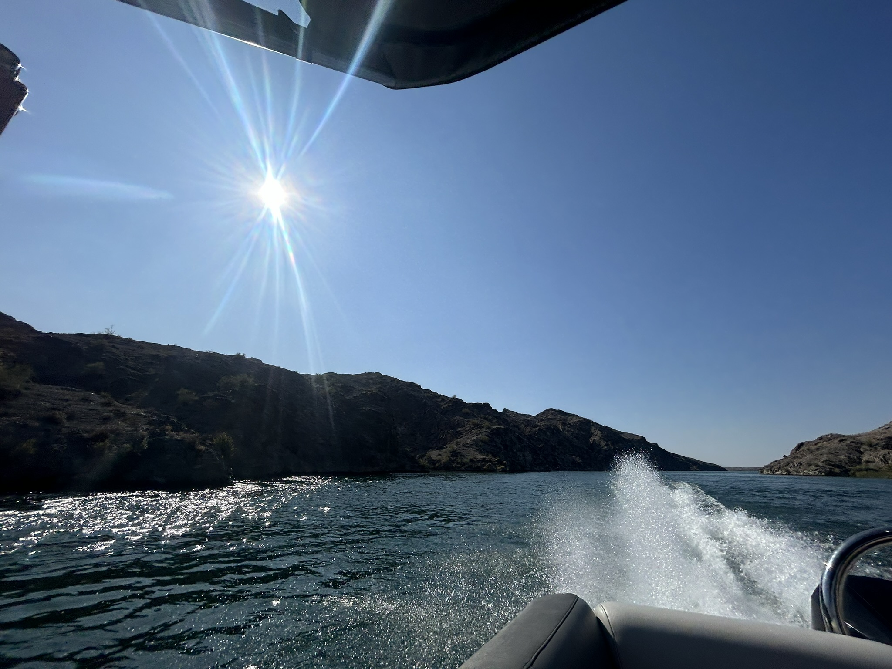
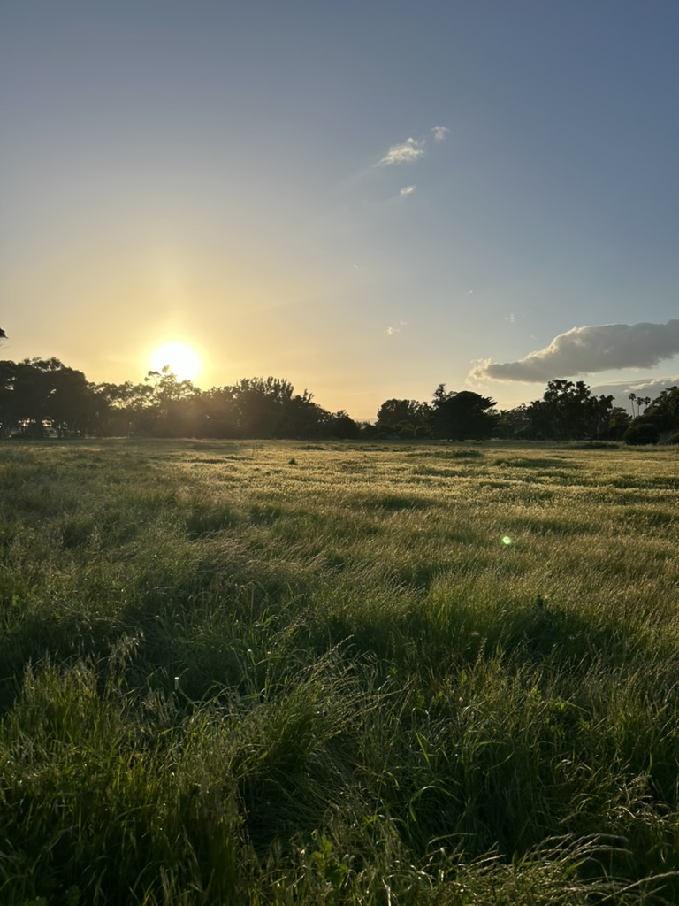
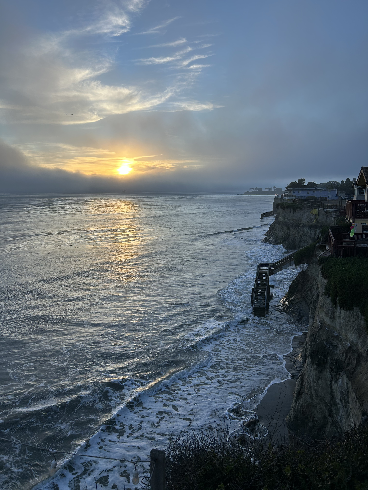
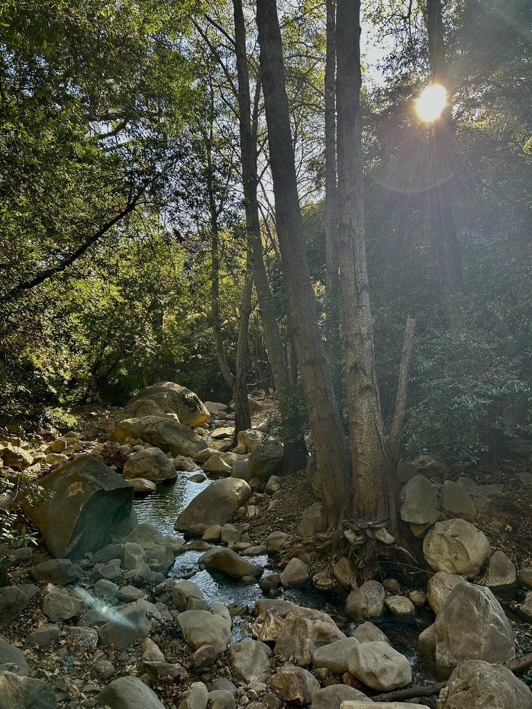
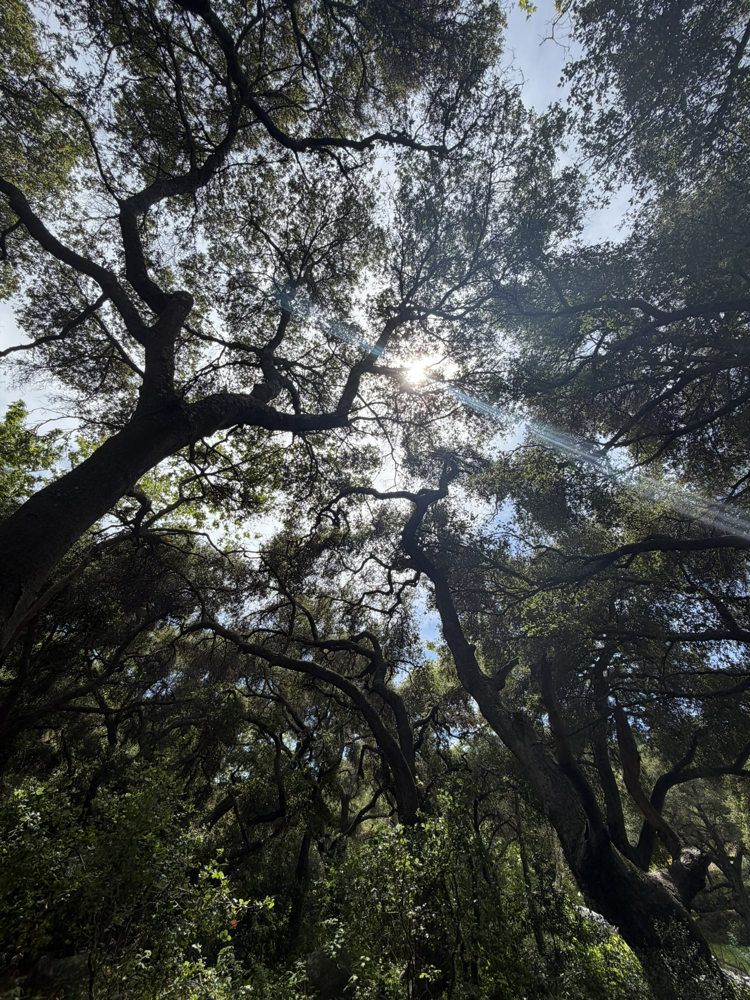
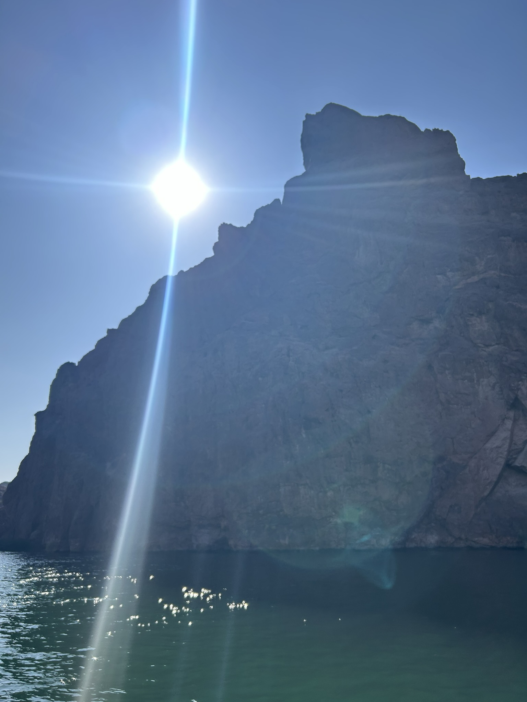

// nerd. peace and quiet enthusiast.
about
I like systems, silence, and hard work. Most of my time is spent building things, taking photos, and finding excuses to be somewhere remote.
This is a small corner of the internet where I keep the things I make and the places I've been.
landscapes & collages








